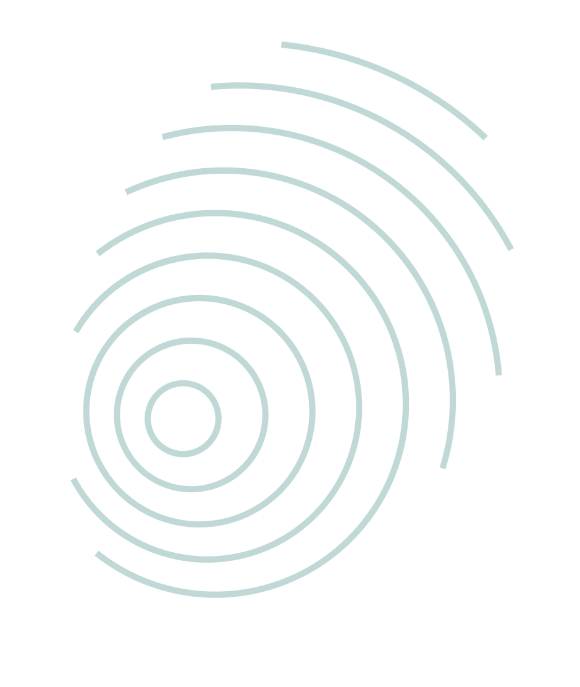
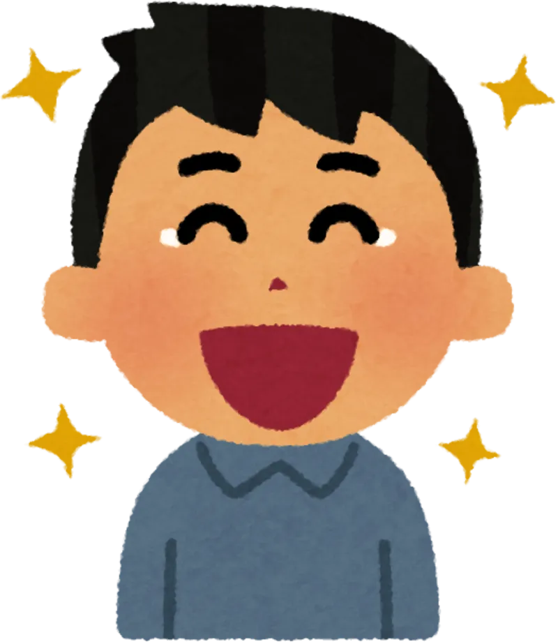
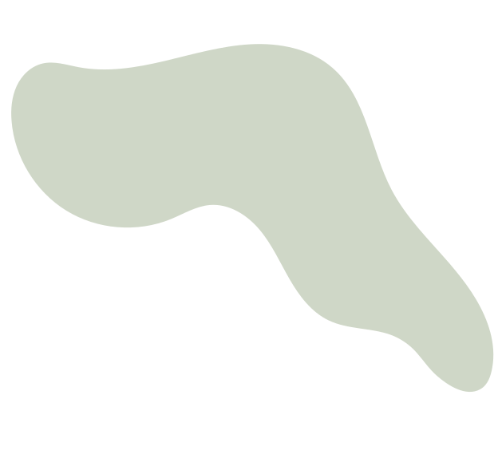
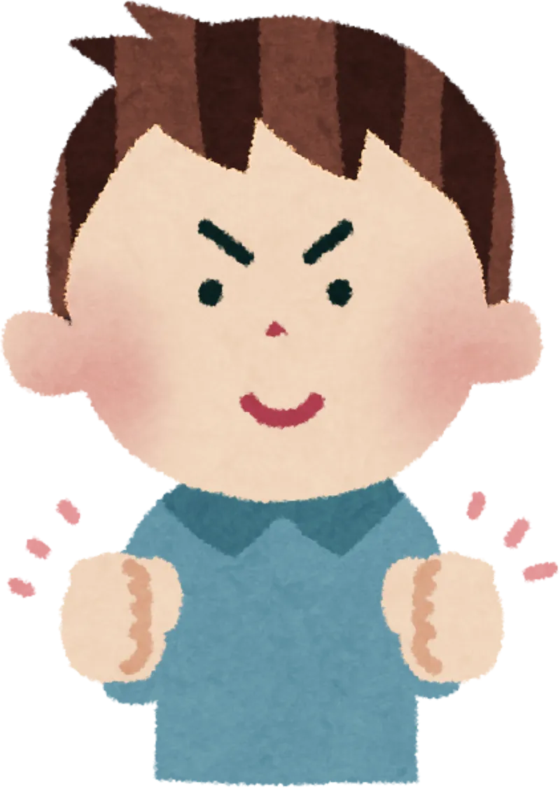
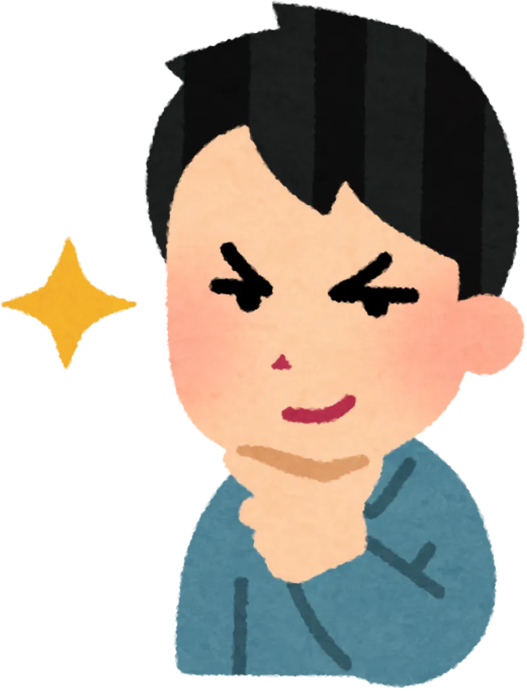

Développer vos compétences d’auto-gestion et votre confiance
Crédits : Kevin Li BSc MSPH, Aakankshya Kharel BSc
Dr. Marlene Dytoc MD PhD FRCPC
Conçu par : Danting Zheng BSc Premier cycle
Traduction : Cécilia Bernier BSc, Michelle Leung BScN


Ce que vous allez accomplir dans ce module
À la fin de ce module, vous serez en mesure de :
Aperçu du module
- 01Comprendre l’auto-efficacité : croire en vos capacités
- 02Connaître vos déclencheurs : le savoir, c’est le pouvoir
- 03Petites habitudes, grands gains : bâtir des routines et de la confiance
- a) Se fixer des objectifs «SMART»
- 04Le progrès n’est pas une ligne droite : apprendre des obstacles
- a) Stratégies futées : le dialogue intérieur positif
- 05Vous méritez du soulagement : faites valoir vos besoins
- 06Votre plan d’action contre l’eczéma
- 07Points clés : vous êtes l’expert de vous-même
Notre plan anti-démangeaisons
Vous êtes en charge : introduction à l’auto-efficacité
Lorsqu’il est question d’eczéma, l’auto-efficacité signifie avoir confiance en votre capacité à gérer votre peau, à faire face aux défis et à prendre des décisions éclairées concernant vos soins.
Vous ne pouvez pas toujours contrôler chaque poussée, mais vous pouvez contrôler votre approche, vos connaissances et vos actions. Développer l’auto-efficacité vous aide justement à y parvenir.
Connaître vos déclencheurs : le savoir, c’est le pouvoir
Identifier vos déclencheurs personnels vous aide à mieux comprendre et prévenir les poussées. À l’aide de votre journal des symptômes et déclencheurs, notez chaque jour :
- L’état de votre peau (niveau de démangeaisons, rougeurs, nouvelles plaques).
- Les aliments consommés (surtout les nouveaux ou ceux que vous soupçonnez).
- Les produits utilisés (soins de la peau, lessive, produits ménagers).
- Vos activités, votre niveau de stress et la météo.
Suivi sur 7 jours (en anglais)
Journal des symptômes et déclencheurs
Remplissez-le chaque soir. Après 2 à 4 semaines, relisez-le pour repérer vos tendances personnelles.
Petites habitudes, grands gains
De petits gestes réguliers peuvent mener à de grands résultats pour mieux gérer l’eczéma et renforcer votre confiance.
Habitudes quotidiennes
- Hydratation régulière — au moins deux fois par jour avec un émollient riche, sans parfum.
- Nettoyage doux — de l’eau tiède et un nettoyant doux, non savonneux.
- Privilégiez les produits sans parfum et hypoallergènes quand c’est possible.
- Même 5 à 10 minutes d’une activité apaisante peuvent aider. (On en reparlera dans le Module 5.)
Développer l’habitude
- Commencez petit : choisissez une petite habitude à travailler pendant une semaine.
- Ajoutez-la à une routine existante («empilement d’habitudes»!) : appliquez votre crème hydratante tout de suite après vous être brossé les dents.
- Facilitez-vous la tâche : gardez votre crème hydratante bien en vue là où vous en avez besoin (salle de bain, table de chevet).
Se fixer des objectifs «SMART»
Mettez toutes les chances de votre côté en vous fixant les bons objectifs! Assurez-vous qu’ils soient :
Fiche d’objectifs (en anglais)
Mon objectif SMART pour ma peau
Essayez d’utiliser la fiche d’objectifs SMART fournie pour créer la vôtre — environ 5 minutes.

Le progrès n’est pas une ligne droite : normaliser les reculs
Gérer l’eczéma est un parcours avec ses hauts et ses bas. Les poussées vont arriver.
- Revoir la situation : au lieu de penser «J’ai tout gâché», essayez «C’est une occasion d’apprendre.»
- Réfléchir sans se blâmer : considérez les reculs comme de l’information. Qu’est-ce qui a pu déclencher cette poussée? Qu’est-ce qui a aidé dans le passé?
- Revenir à la routine : choisissez doucement une chose à reprendre dès aujourd’hui. Pas besoin d’attendre le «moment parfait».
- Être gentil envers soi-même : le progrès inclut la patience et la compassion envers soi, pas seulement la persistance.
Stratégies futées : le dialogue intérieur positif
Votre voix intérieure influence votre façon de réagir — aux poussées, aux reculs et à vos soins.
«Ça ne s’améliorera jamais.»
→ Essayez plutôt :
«C’est difficile, et j’apprends encore. Mes actions font une différence, même si je ne la vois pas tout de suite.»
«J’ai encore abîmé ma peau.»
→ Essayez plutôt :
«Cette poussée va finir par passer. Qu’est-ce que je peux faire maintenant pour aider ma peau?»
«J’oublie toujours ma routine. Je suis nul(le) là-dedans.»
→ Essayez plutôt :
«Prendre une nouvelle habitude demande du temps. Je peux m’organiser autrement pour m’en souvenir plus facilement.»
Votre plan d’action contre l’eczéma
Créé avec votre médecin — adapté à vos déclencheurs, à vos traitements et à votre vie.
Vos soins de baseQuoi appliquer, quand et comment — les bons jours comme les jours d’entretien, quand tout est stable.
Vos signes précocesLes signes qui vous indiquent, à vous, qu’une poussée commence — pas des signes généraux, mais les vôtres. Ils sont différents pour chaque personne.
Soins intensifiésQuoi faire quand ces premiers signes apparaissent, avant que la poussée ne s’installe complètement. Agir tôt donne habituellement une poussée moins forte.
Quand appelerDes consignes claires et précises sur le moment de contacter votre clinique ou votre médecin — pour savoir que vous ne réagissez pas de façon excessive en le faisant.
Plan à remplir (en anglais)
Mon plan d’action contre l’eczéma
Remplissez vos zones verte, jaune et rouge avec votre équipe de soins — puis gardez-le à portée de main.
Prendre le temps d’y réfléchir
Question 1 de 4Prendre le temps d’y réfléchir
Question 2 de 4Prendre le temps d’y réfléchir
Question 3 de 4Prendre le temps d’y réfléchir
Question 4 de 4
Points clés : vous êtes l’expert de vous-même
- › L’auto-efficacité — croire que vos actions font une différence — est l’un des outils les plus puissants pour gérer votre eczéma.
- › Noter vos symptômes, votre stress, vos aliments et vos produits vous aide à voir des tendances invisibles au jour le jour.
- › De petites habitudes régulières, bâties une à la fois et ajoutées à vos routines existantes, durent plus longtemps que de grands plans ambitieux.
- › Les objectifs SMART sont spécifiques, mesurables, atteignables, réalistes et définis dans le temps — pas de vagues souhaits de «faire mieux».
- › Les reculs font partie du processus; ce ne sont pas des preuves d’échec. Voyez-les comme de l’information et ajustez votre plan.
- › Un plan d’action contre l’eczéma, créé avec votre médecin, vous donne un chemin clair : soins quotidiens, signes précoces d’une poussée, soins intensifiés et quand appeler.
Ce module offre de l’information générale et ne remplace pas les conseils de votre médecin ou de votre dermatologue. En cas de crise ou si vous pensez à vous faire du mal, composez le 911 ou appelez la ligne d’aide en santé mentale de l’AHS au 1-877-303-2642.
Sources
- Bandura A. Self-efficacy: toward a unifying theory of behavioral change. Psychol Rev. 1977;84(2):191-215.
- Ersser SJ, et al. Psychological and educational interventions for atopic eczema in children. Cochrane Database Syst Rev. 2014;(1):CD004054.
- Stalder JF, et al. Patient-oriented SCORAD: a self-assessment score in atopic dermatitis. Exp Dermatol. 2011;20(12):1007-1013.
- Schut C, et al. Psychological interventions in the treatment of chronic itch. Acta Derm Venereol. 2016;96(2):157-161.
- Gardner B, Lally P, Wardle J. Making health habitual: the psychology of 'habit-formation' and general practice. Br J Gen Pract. 2012;62(605):664-666.
- National Eczema Association. EczemaWise App. nationaleczema.org.
- Silverberg JI, et al. Patient burden and quality of life in atopic dermatitis in US adults. Ann Allergy Asthma Immunol. 2018;121(3):340-347.